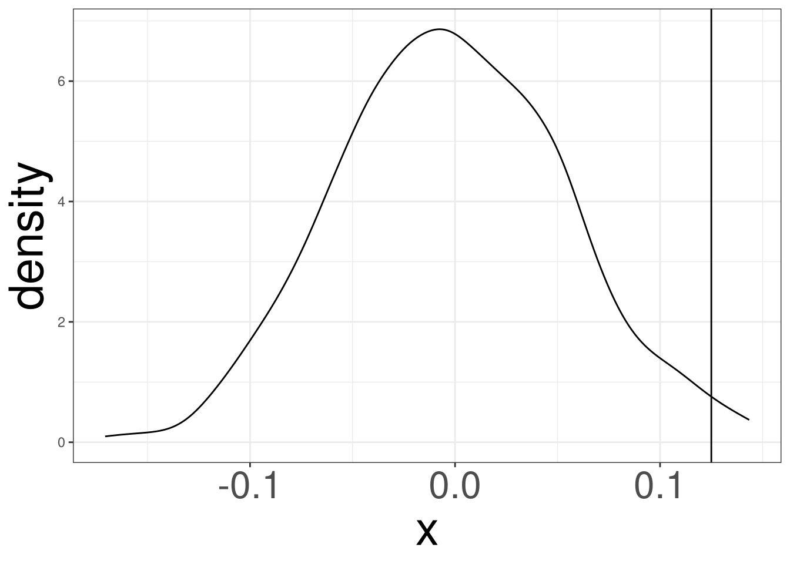

Code
props_df(DATA, GROUP, OUTCOME, VAL, diff = TRUE)The bacteria data set contians information on whether bacteria (y: y or n) is present after utilizing treatments (ap: active or placebo).
We are interesting in determine the proportion of having bacteria present is different for those taking an “active” or “placebo”.
We are interesting in determining if different groups see different proportions of a binary outcome.
We compute the proportions of observing the binary outcome in Group 1 and Group 2 and see if they are fundamentally different from each other.
| Groups | Outcome 1 | Outcome 2 |
| Group 1 | \(p_{11}\) | \(p_{21}\) |
| Group 2 | \(p_{12}\) | \(p_{22}\) |
We want to compare \(p_{11}\) and \(p_{12}\), to determine if the probability of outcome 1 are the same for both groups.
We can use both \(p_{11}\) and \(p_{12}\) to determine if there is a fundamental difference.
However, it will be more beneficial to utilize one statistic to contruct the sampling distribution.
\[ T = \hat p_{11} - \hat p_{12} \]
Is \(T = .125\) of a difference large enough to indicate that an active drug is effective against the bacteria, or seeing this can be due to random chance.
We will test the following hypothesis:
\[ H_0:\ \Delta = p_1-p_2 = 0 \]
\[ H_a:\ \Delta = p_1 - p_2 \neq 0 \]
#> [1] 0.01498501
Can we determine the plausible values of \(\Delta\) that may have produced our data set?
The standard error is the standard deviation of a statistic.
It can give us a margin of error for the statistic that we compute from the data.
Confidence Intervals give you a collection of values that may contain the true parameter of interest.
The probability of capturing the true parameter is known as the confidence. This value can take any number between 0% to 100%
The confidence interval were displayed as: X%: (L, U)
These are a collection of \(\Delta\) values that will fail to reject the Null Hypothesis.
The \(\Delta\) values that are not different from our current estimate \(T\)
Bootstrapping Techniques
Mathematical Models
Bootstrapping is a technique to determine which \(\Delta = p_1-p_2\) values, or any other statistic, will not be significantly different than \(T\).
Bootstrapping will simulate several fake data sets from the DGP of the data. Afterwards, each data set will produce a statistic to construct the sampling distribution.
The data set was generated from a distribution called \(f\).
\(f\) is unknown, we will sample from \(\hat f\) generated from the data.
When \(n \rightarrow \infty\), then \(\hat f\rightarrow f\)
So long as \(n\) is sufficiently large, the DGP of a statistic will be generated.
resample() functionThe resample() will create a new data set by sampling the old data set with replacement.
Use the replicate() function to repeat this process a high number of times.
\[ 0.125 \pm 0.05 \]
We are 95% confident that the true difference in proportion (\(\Delta\)) is captured between the ranges (0.025, 0.224).